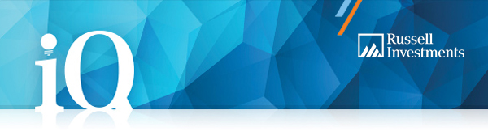

|
Click here to view online
|
|

|
Hi %%First Name%%
Let’s take care of your insurance
|
When you applied to become a member of iQ Super – SaverTM, you told us that you want to transfer an existing insurance cover to your new account. And we’re here to help.
Here’s what you need to do: Please download, complete and send us an Insurance Transfer Form via email or mail it to us at Russell Investments Master Trust, Locked Bag A4094, SYDNEY SOUTH NSW 1235.
|
|
Some important things to remember
- The insurer will consider your application to transfer your insurance to iQ Super – Saver. If the transfer is successful, your new insurance cover will come under the terms and conditions of iQ Super – Saver’s insurance arrangements.
- If for some reason, you are not eligible for an insurance transfer, you may need to go through an underwriting process and we’ll be in touch with more information.
|
In the meantime, if you have any questions, please call us on 1800 555 667 or email us.
Yours sincerely
iQ Super – Saver
For and on behalf of the Trustee, Total Risk Management Pty Ltd.
|
Manage your super on the go with our app
The Russell Investments Super App can help you take control of your super and make positive changes to improve your life after work.
You can set a retirement goal and track your progress, compare your balance with others like you, find and consolidate your lost super, make extra contributions, change your investment strategy, update your details, check your balance and investment returns and so much more—all at the touch of a button.
|
|
|